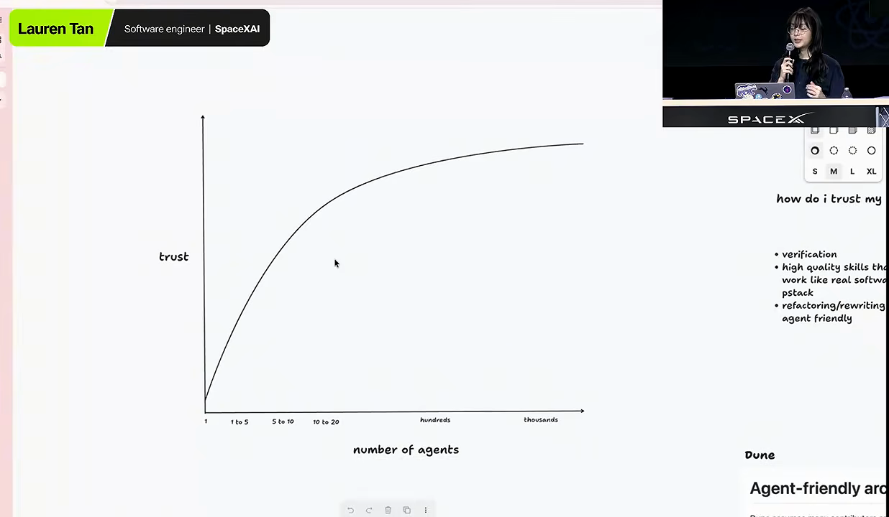
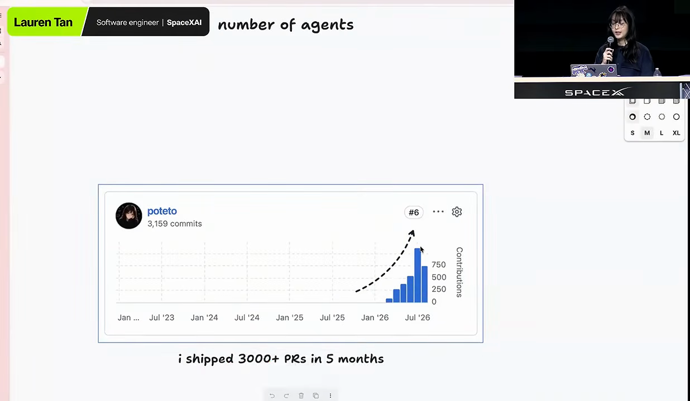
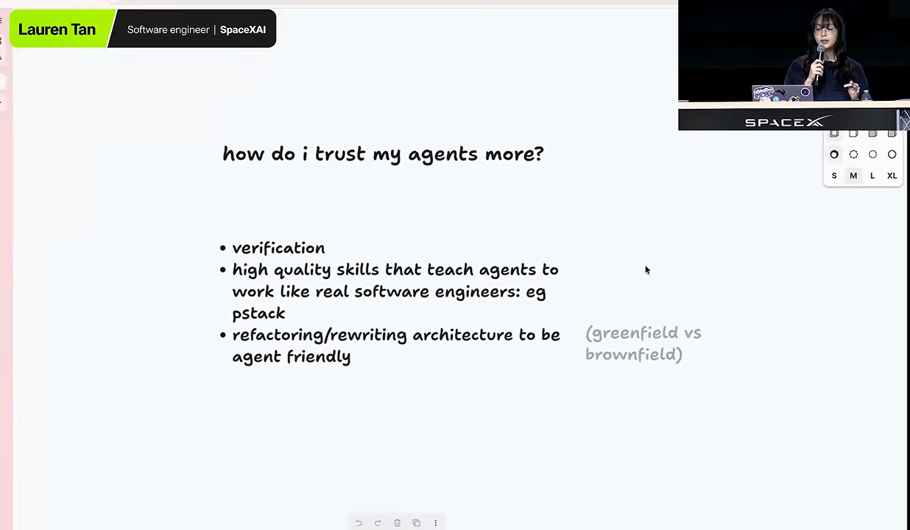
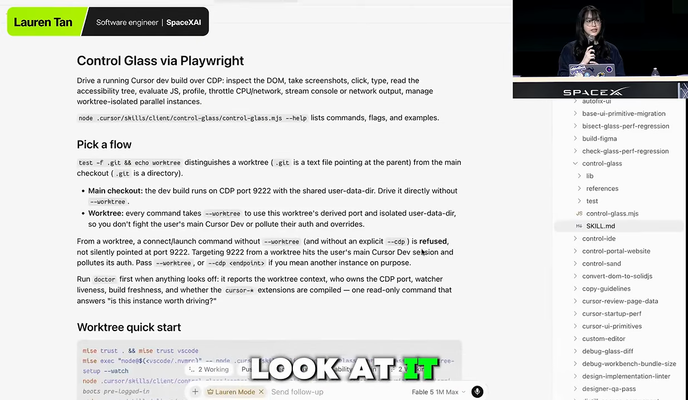
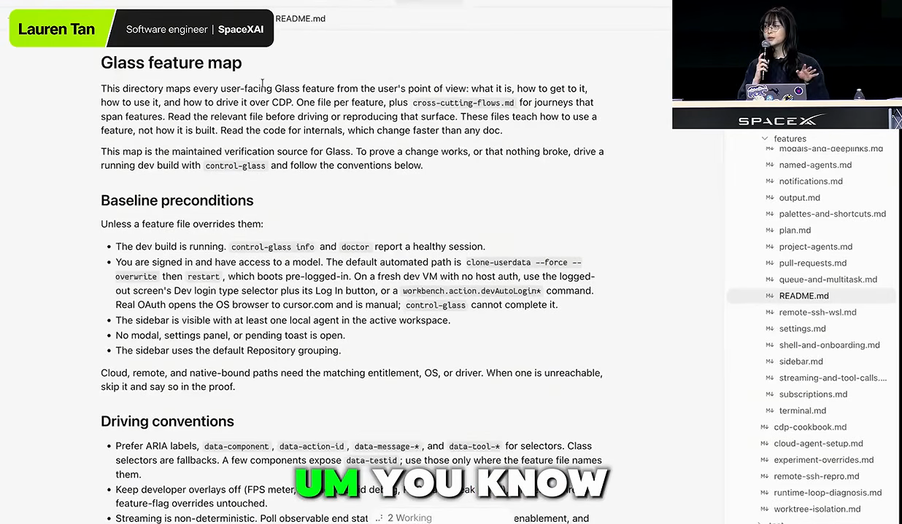
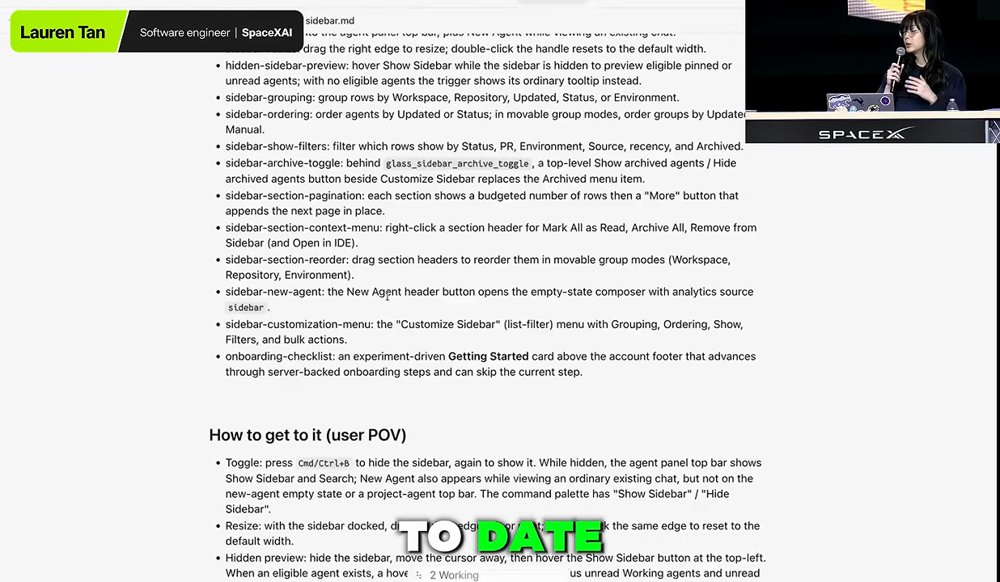
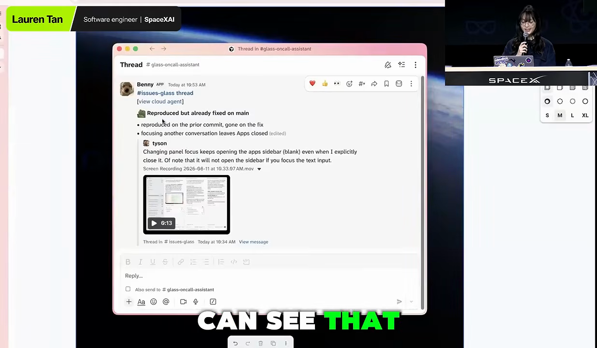
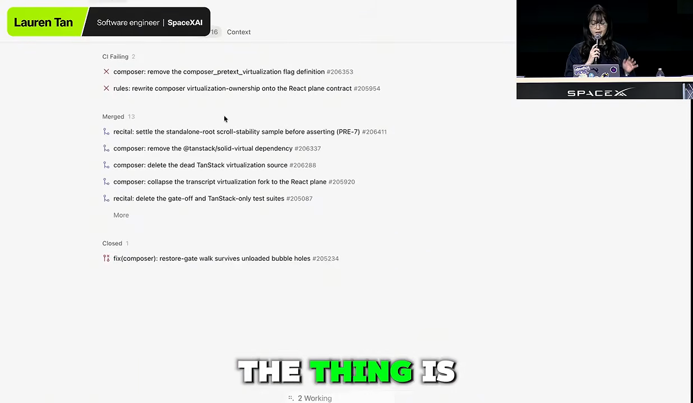
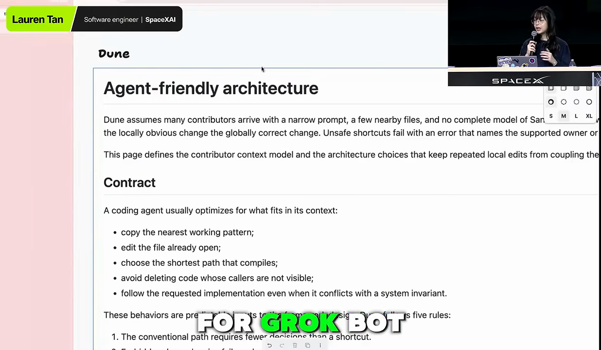
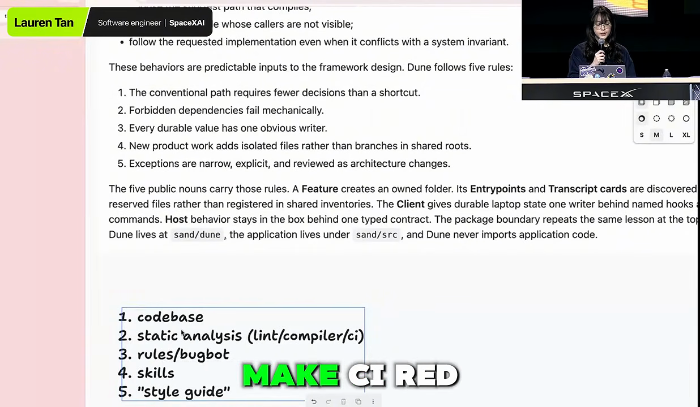

믿지 못하면 마이크로매니징하게 돼요
발표자는 에이전트로 코드를 짜면서 가장 크게 부딪힌 문제가 '어떻게 믿느냐'였다고 해요. 오래 코드를 써 온 엔지니어일수록 좋은 엔지니어링에 대한 기준이 뚜렷해요. 그런데 에이전트는 추측하고, 지어내고, "결정적 증거를 찾았다"고 백 번째 단언하는데 실제 원인은 따로 있어요. 그러면 믿음이 깨지고, 믿지 못하니 에이전트를 제대로 쓰지도 못해요.
발표자는 이걸 팀 관리에 빗대요. 팀원을 믿지 못하는 매니저는 마이크로매니징을 해요. 어깨 너머로 일하는 걸 지켜보고, 버그를 내보내지 않는지 하나하나 확인하느라 시간을 다 써요. 에이전트를 믿지 못할 때 우리가 하는 일도 똑같아요.
신뢰 곡선
발표자가 손으로 그린 그래프예요. 본인 말로도 과학적인 그래프는 아니에요. 가로축은 동시에 돌리는 에이전트 수로, 1개에서 1~5개, 5~10개, 10~20개, 수백 개, 수천 개로 늘어나요. 세로축은 에이전트를 얼마나 믿는지예요.

1년쯤 전, 에이전트로 코딩하는 사람이 많지 않던 때를 떠올려 보면 곡선의 왼쪽 아래예요. 에이전트 한두 개, 많아야 몇 개를 띄워 놓고 출력을 전부 지켜보며 계속 프롬프트를 넣어요. 에이전트 하나도 못 믿는데 100개를 띄울 수는 없으니, 그 이상으로 늘릴 수가 없어요.
발표자는 지난 다섯 달 동안 이 곡선을 올라왔다고 해요. 지금은 에이전트가 PR(Pull Request)을 자동으로 머지해요. 오늘 아침 일어나 보니 PR 20개가 이미 main에 들어가 있었고, 들어간 걸 리뷰해 보니 괜찮았대요. 본인도 '대충 찍어내는 사람처럼 들리겠지만 아니다'라고 웃으며 덧붙여요. 이 발표는 어떻게 거기까지 왔는지에 관한 이야기예요.
검증: 에이전트가 직접 돌려 보게 하기
발표자는 자랑하려는 게 아니라며 기여 그래프를 보여 줘요. 모양이 앞의 신뢰 곡선과 닮았어요. Cursor에 들어온 첫 달은 코드베이스를 익히느라 거의 성과가 없었어요. 에이전트를 믿게 될수록 속도가 붙었고, 지난달엔 PR 1,000개를 머지했어요. 이번 달은 아직 12일인데 800개 가까이 됐대요.

이 코드가 다 좋은 코드냐고 묻는 건 당연하다고 발표자도 인정해요. 그래도 에이전트를 잘 세팅하면 누구든 비슷한 수준에 갈 수 있다면서, 신뢰를 높이는 방법 세 가지를 꺼내요.

검증이 루프를 닫아요
발표자가 가장 중요하다고 꼽는 건 검증이에요. 에이전트가 코드를 실제로 실행하고, CPU(Central Processing Unit) 트레이스나 힙 스냅샷을 뜨고, iOS 시뮬레이터를 열 수 있어야 한다는 뜻이에요. 사용자가 앱을 만나는 방식 그대로 에이전트도 앱을 만질 수 있어야 해요. 검증이 좋은 코드를 보장하진 않지만, 최소한 맞게 동작하는 코드는 보장해 줘요. 믿음으로 가는 큰 한 걸음이에요.
발표자의 입사 첫 주 이야기가 예예요. 원래는 클라우드 에이전트 팀에 갈 예정이었는데, React 경험이 많아서 출시를 일주일 앞둔 에이전트 창 작업에 투입됐어요. 크롬 개발자 도구로 트레이스를 떠서 플레임 그래프를 보며 원인을 찾으려 했지만, 코드베이스도 처음이라 뭘 보는지 몰랐어요. 에이전트도 몰랐어요. 스크린샷이나 트레이스 파일을 넘기면 "이거네요" 하고 자신 있게 짚었지만, 고쳐 보면 원인이 아니었어요.
검증 스킬이 없으면 사람이 검증자예요. 아래 왼쪽처럼 에이전트가 코드를 쓰면 사람이 개발 빌드를 열어 보고, 스크린샷과 콘솔 에러를 복사해 다시 넘겨요. 루프마다 사람이 끼어 있어서 병렬로 돌릴 수가 없어요.
첫 검증 스킬, control-glass
그래서 발표자가 Cursor에서 처음 만든 스킬이 control-glass예요. Glass는 에이전트 창의 내부 코드명이에요. 아래 화면은 이 스킬의 SKILL.md예요. 맨 위 설명에 할 수 있는 일이 나열돼 있어요. 실행 중인 Cursor 개발 빌드를 CDP(Chrome DevTools Protocol)로 조종해서 DOM(Document Object Model)을 살피고, 스크린샷을 찍고, 클릭·입력하고, 접근성 트리를 읽고, 자바스크립트를 실행하고, 프로파일링하고, CPU·네트워크를 느리게 만들어 보는 일이에요.

발표자는 스킬 코드 자체는 별로 흥미롭지 않다고 해요. 에이전트에게 시키면 쉽게 만들어 준대요. Electron 앱이나 웹 앱이면 Chrome DevTools Protocol을, iOS 앱이면 애플이 주는 시뮬레이터 도구를 쓰는 법을 가르치면 돼요. 오른쪽 파일 트리에는 성능 회귀를 찾는 스킬처럼 control-glass를 바탕으로 한 스킬이 여럿 보여요.
기능 지도: 에이전트에게 앱의 길 알려 주기
control-glass로 에이전트가 앱을 띄우고 트레이스를 뜰 수는 있게 됐어요. 그런데 에이전트는 에이전트 창이 뭔지 몰랐어요. 누가 '왼쪽 사이드바가 버벅인다', 'PR 탭이 안 된다'고 하면 그 기능이 코드 어디에 있는지, 화면에서 어떻게 가는지 찾느라 헤맸어요. 개발 빌드는 떴는데 어디를 클릭해야 할지 몰라서 거의 쓸모가 없었대요.
그래서 붙인 게 기능 지도예요. 아래는 그 README예요. 첫 문단에 목적이 적혀 있어요. 사용자 눈에 보이는 Glass 기능마다 '무엇인지, 어떻게 가는지, 어떻게 쓰는지, CDP로 어떻게 조종하는지'를 기능 하나당 파일 하나로 적어요.

README 아래쪽 '기본 전제'에는 에이전트가 기능을 확인하기 전에 맞춰 둘 상태가 있어요. 개발 빌드가 떠 있고, 로그인돼 있고, 사이드바에 에이전트가 하나 이상 보이는 상태예요. '조작 규칙'은 요소를 고를 때 ARIA(Accessible Rich Internet Applications) 레이블과 data-component 같은 속성을 먼저 쓰라고 해요.
기능 파일 하나를 열면 이렇게 생겼어요. 사이드바 파일에는 하위 기능 목록이 길게 있고, 아래에 '사용자 입장에서 가는 법'이 따로 있어요.

효과는 사용자 제보에서 나타나요. Cursor 안에는 에이전트 창 피드백을 받는 Slack 채널이 있는데, 제보 품질이 낮은 경우가 많대요. 스크린샷 한 장에 '???'만 달려 오기도 해요. 기능 지도가 없으면 에이전트도 손을 못 대지만, 있으면 그 화면이 어떤 기능인지, 어떻게 가서 재현할지 연결할 수 있어요.
발표자는 자신이 만든 플러그인 pstack에 이걸 만들어 주는 스킬을 넣었어요. 코드를 탐색해서 첫 기능 지도를 만들어 주는 스킬과, 앱이 바뀌면 지도를 고쳐 주는 스킬이에요.
pstack은 실패를 관찰해서 만든 스킬 모음
진행자가 pstack이 뭔지 묻자, 발표자는 이름부터 설명해요. P는 감자(potato)예요. Y Combinator CEO(Chief Executive Officer) Garry Tan이 만든 플러그인 gstack(Garry Stack)을 장난스럽게 비튼 이름이에요. 둘은 성이 같을 뿐 아무 관계가 없대요. gstack을 자기 엔지니어링 방식에 맞게 다시 만든 셈이에요.
처음부터 플러그인을 만들 생각은 없었어요. control-glass로 시작해 스킬이 하나씩 쌓였을 뿐이에요. 두 번째 스킬은 'how'였는데, 이것도 에이전트를 지켜보다 생겼어요.
실패를 볼 때마다 스킬로
신뢰 곡선 아래쪽에 있던 시절, 발표자는 에이전트에게 지나칠 만큼 잔소리를 했어요. 버그 제보를 주고 왜 안 되냐고 물으면 에이전트는 "이게 원인일 수밖에 없어요"라고 단언했어요. 그런데 도구 호출을 열어 보니, 영향을 받았을 코드를 정작 읽지도 않았어요. 그 순간 이 에이전트는 믿을 수 없다고 느꼈대요.
이렇게 불신만 쌓이면 무력감에 빠지기 쉬워요. 발표자는 다시 관리자 비유로 돌아가요. 코딩은 잘하지만 회사 사정은 전혀 모르는, 5초 전에 입사한 신입이 있다고 해 봐요. 그 사람이 일을 잘하게 하려면 가르쳐야 해요. 에이전트에게는 그게 스킬이에요.
스킬은 그냥 마크다운이지만, 지시와 정보를 많이 담을 수 있어요. 발표자는 이렇게 설명해요. LLM(Large Language Model)은 다음 토큰을 예측하니까, 처음에 질 좋은 토큰을 주면 더 똑똑한 답 쪽으로 패턴을 맞춰요. 트위터에서는 이걸 '모델을 다른 잠재 공간으로 끌어당긴다'고 부르기도 한대요.
flowchart LR A["에이전트에게 일 시키기"] --> B["도구 호출·생각 과정 읽기"] B --> C["실패 패턴 발견
예: 코드를 안 읽고 단언"] C --> D["스킬로 적기
예: 추측 말고 코드부터 읽어라"] D --> E["eval로 효과 확인"] E --> A
그렇게 만든 스킬이 '환각하지 마라, 코드를 찾아 읽어라, 하위 에이전트를 많이 써라, 추측하지 마라' 같은 것들이에요. 마지막 칸의 eval은 다음 섹션에서 다뤄요.
eval로 스킬을 시험하고 다듬기
진행자가 채팅 질문 두 개를 묶어 물어요. 제품도 코드베이스도 계속 바뀌는데 스킬은 어떻게 관리하나요? 그리고 검증이 충분히 좋은지는 어떻게 아나요? 발표자의 답은 둘 다 eval이에요.
eval은 에이전트용 단위 테스트
발표자는 eval을 '에이전트를 위한 단위 테스트'로 생각해요. 특별한 프레임워크 없이 직접 만들 수 있고, 얼마나 엄밀하게 할지는 하기 나름이에요. pstack의 potato 모드 안에는 eval 플레이북이 있는데, 꽤 엄밀하게 짜여 있대요.
순서는 이래요. 조정 에이전트가 먼저 스킬이 해내야 할 일을 루브릭으로 적어요. 그다음 하위 에이전트를 여러 개 띄워 각자 폴더에서 같은 일을 시켜요. 폴더 이름은 평가 중이라는 걸 눈치채지 못하게 지어요. 에이전트는 평가받는다는 걸 알아채면 행동을 바꾸거든요. Cursor는 여러 모델을 지원하니, 같은 스킬을 모델별로 돌려 내가 쓰는 모델에서 잘 되는지 볼 수 있어요.
flowchart LR A["조정 에이전트
루브릭 작성"] --> B["하위 에이전트 여러 개
모델마다 다르게"] B --> C["평가 티가 안 나는
각자의 폴더에서 실행"] C --> D["다른 모델의
심사 에이전트가 채점"] D --> E{"모두 10점?"} E -- "아니요" --> F["스킬 고치기"] --> B E -- "예" --> G["스킬 반영"]
점수가 나온다는 게 핵심이에요. 그러면 힐 클라이밍을 할 수 있어요. 채점하는 모델이 한쪽으로 치우치지 않게 다른 모델로 심사 에이전트를 하나 더 두고, Cursor의 /loop로 '모두 10점이 될 때까지 이 eval을 반복해'라고 시켜요. 발표자는 스킬을 고칠 때마다 이 플레이북을 돌리고, control-glass도 이렇게 다듬었어요. 검증 스킬을 검증한 셈이에요. 지금은 꽤 손을 떼고 둬도 된대요.
그래도 스킬 관리는 어려워요
발표자는 스킬 관리에 안목과 관찰이 많이 든다고 해요. 뒷좌석 운전자가 되는 게 요령이래요. 페어 프로그래밍하며 동료 코드를 보다 보면 '왜 이렇게 안 했어?' 하고 묻게 되잖아요. 처음 스킬을 쌓을 때는 에이전트를 그냥 지켜보지 말고 운전석에 앉아야 해요. 도구 호출과 코드, 생각 과정을 전부 읽어 보면 어디서 실패하는지 보이고, 거기에 스킬을 만들면 돼요.
발표자는 요즘 엔지니어가 주방장 같다고 해요. 음식을 직접 다 만들지 않아요. 라인 쿡과 수셰프, 여러 조리대가 있고, 주방장은 주방 환경을 설계하고 일을 나눠 주는 사람이에요.
로컬에서 클라우드 에이전트로
진행자가 실제로 어디서부터 시작하면 되느냐고 물어요. 워크트리에서 격리해 돌리는지, 클라우드 환경인지요. 발표자는 로컬부터 시작하라고 답해요. 에이전트가 앱을 띄우고 API(Application Programming Interface)를 불러 가며 다루는 모습을 직접 볼 수 있기 때문이에요. CLI(Command-Line Interface)든 데스크톱 앱이든 마찬가지예요.
검증 스킬은 팀 전체의 실력을 올려요
발표자 본인은 요즘 거의 클라우드 에이전트만 써요. 환경을 갖추는 데 시간을 조금 들이면, 검증 스킬이 나 혼자가 아니라 팀과 회사 전체에 이득을 줘요. 클라우드 에이전트가 같은 스킬로 자동화된 일을 할 수 있으니까요.
예로 드는 게 Benny라는 에이전트예요. 버그 제보가 들어오면 클라우드에서 자기 컴퓨터를 열고 Cursor를 띄워요. 그리고 같은 control-glass 스킬로 앱을 조작해 버그를 재현해 봐요. 아래는 Benny가 Slack 스레드에 남긴 보고예요.

이 보고 덕에 할 일은 새 빌드를 내는 것뿐이에요. 고쳐졌는지 아닌지 에이전트와 앉아 한 시간씩 따져 볼 필요가 없어요. 그리고 이 이득은 팀원 모두가 받아요.
곡선을 건너뛰지 마세요
다만 여기까지는 여정이에요. 아직 에이전트 몇 개를 지켜보는 단계라면, 지금 당장 클라우드 에이전트를 수천 개 띄우지 말라고 해요. 토큰만 낭비하고 비용이 엄청나게 든대요.
진행자는 지금까지를 이렇게 정리하고, 발표자도 그렇다고 해요. 아래 그림은 그 순서를 신뢰 곡선 위에 올린 거예요.
발표자는 개인의 신뢰 수준이 핵심이라고 덧붙여요. pstack 같은 플러그인은 속도를 높여 주지만, 발표자를 무작정 믿지는 말라고 해요. 사람마다 엔지니어링 기준이 다르니, pstack을 포크해서 자기 기준을 스킬로 적고, 에이전트가 그걸 지키는지 검증하라는 거예요. 그래야 곡선을 올라가 자동화를 시작할 수 있어요.
바이브 코딩한 앱일수록 제약부터
세 번째 이야기는 리팩터링과 다시 짜기예요. 업계에서 가장 논쟁적인 주제 중 하나가 '앱을 새로 짜야 하나'예요. 엔지니어는 새 회사에 들어가 코드를 보면 '누가 이렇게 짰어, 다 다시 짜고 싶다'고 생각하기 쉽고, 보통은 그러지 말라는 조언을 들어요. 발표자는 반대로 다시 짤 만한 경우가 있다고 말해요.
큰 회사의 문제가 이제 모두의 문제
발표자가 Meta에 있을 때는 거대한 모노레포에 수만 명이 코드를 넣었어요. 뛰어난 엔지니어가 많았지만 코드 품질은 생각보다 좋지 않았대요. 'AI 슬롭 이전에 사람 슬롭이 있었다'고 농담해요.
그래서 큰 회사의 인프라는 가장 서툰 엔지니어에 맞춰 설계돼요. 프레임워크와 관례, 가드레일을 깔고, 인턴이 운영 데이터베이스를 날리지 못하게 권한도 막아요. 이런 브라운필드 코드베이스에서는 에이전트도 큰 사고를 치지 못해요. 이미 울타리가 있으니까요. 부족하면 더 두르면 돼요.
가장 위험한 건 새로 만든 그린필드 앱이에요. 동시에 가장 큰 기회이기도 해요. 둘을 비교하면 이래요.
| 잘 갖춰진 기존 코드베이스 | 바이브 코딩한 새 앱 | |
|---|---|---|
| 가드레일 | 프레임워크·관례·권한 제한이 이미 있어요 | 거의 없어요 |
| 에이전트의 행동 | 울타리 안에서 꽤 잘 해요 | 가장 편한 지름길로 풀어요 |
| 시간이 지나면 | 울타리를 더 두르면 돼요 | 아무도 이해 못 하는 코드로 불어나요 |
| 발표자의 처방 | 그대로 써도 괜찮아요 | 강한 제약을 깔고 다시 짜는 걸 고려해요 |
발표자가 맡은 Grok Bot이 그린필드 앱이었어요. 프로토타입처럼 아주 빨리 바이브 코딩으로 만들었고, 사람은 코드를 전혀 읽지 않았어요. 발표자는 최근 트윗에서 이런 상태를 '유기적 아키텍처'라고 불렀대요. 가드레일이 없으니 에이전트는 매번 가장 편한 방법을 고르고, 코드는 지름길에 맞춰 자라나 통제를 벗어나요.
코드를 안 봐도 되는 상태까지
그래서 코드베이스는 처음부터 강한 제약과 함께 시작해야 한다고 말해요. 에이전트가 좋은 코드를 쓰게 돕는 가드레일이 있어야, 신뢰 곡선 위쪽, 곧 자고 일어나면 PR 20개가 머지돼 있는 단계로 갈 수 있어요.
발표자는 Grok Bot 전체를 새 아키텍처로 옮기는 데 PR 600개 넘게 썼어요. 이제는 코드를 거의 안 본대요. 토큰을 팔려는 말이 아니라, 거기까지 가는 데 그만큼 많은 일과 토큰이 들었다는 뜻이에요. 그 대가로 디자이너, PM(Product Manager), GTM(Go-To-Market) 담당자까지 Grok Bot에 기능을 넣을 수 있게 됐어요. 누가 밤새 성능을 떨어뜨리는 코드를 머지했을까 걱정할 필요도 줄었어요. CI에 제약이 아주 많거든요. 사람이 코드를 쓰기엔 꽤 성가시지만, 그 성가심은 에이전트가 다 받아 내요.
Dune: CI가 막는 규칙들
PR 크기는 얼마나 되나요
진행자가 채팅 질문으로 평균 PR 크기를 물어요. 발표자는 정확히 모른다며 자기 PR 목록을 띄워요. 50줄에서 수백 줄, 많으면 천 줄까지 일에 따라 다르대요.

상한은 두지 않지만, 에이전트에게 일을 여러 PR로 쪼개라고 해요. 커밋이 넘쳐 나는 지금은 더 어렵지만, git 기록은 여전히 좋은 맥락이 된다고 봐요. PR 하나가 작은 일 하나를 설명하면 되돌리기도 쉬워요. 4만 줄짜리 PR에 버그가 묻혀 있으면 뭐가 들어갔는지 아무도 모르니까요.
Dune: 에이전트가 쓰도록 만든 아키텍처
CI가 얼마나 엄격하냐는 질문에, 발표자는 Grok Bot의 아키텍처 Dune을 꺼내요. Dune은 코드명이고, 'Electron 앱을 위한 Next.js'처럼 생각하면 된대요. 처음부터 에이전트가 코드를 쓰도록 설계했어요. 아래 문서의 '계약' 부분은 코딩 에이전트가 원래 어떻게 행동하는지부터 적어요.

그래서 CI는 일부러 성가셔요. 모든 걸 검사해요. React를 써 봤다면 useEffect가 가장 큰 함정 중 하나라는 걸 알 텐데, Dune과 Grok Bot에서는 useEffect를 아예 금지해요. 쓰면 CI가 실패해요.
눈썹이 올라갈 만한 규칙도 있어요. 코드 주석도 금지예요. 에이전트가 다는 주석은 99%가 코드와 상관없는 지난 이야기래요. 예를 들어 "Lauren이 이렇게 하지 말랬다" 같은 주석이 달려요. 발표자는 그 PR이 별로라 한 말이지 영구적인 규칙으로 한 말이 아니었어요. 에이전트는 생각보다 사람 말을 잘 못 알아듣거나 너무 많이 짐작한대요. 그래서 에이전트가 못하는 건 전부 금지했어요.
렌더러를 지키는 import 검사
에이전트 창에는 아직 Dune이 없어서 성능이 자주 떨어져요. PR이 워낙 많이 머지되니, 그중 어느 하나가 성능이나 안정성을 깎을 수 있어요. 발표자는 이 경험을 에이전트 창에도 가져가 다시 짤 계획이에요.
원인 중 하나는 프로세스 분리가 약하다는 거예요. Electron에는 화면을 그리는 렌더러 프로세스와, 렌더러를 막지 않아도 되는 일을 돌리는 메인 프로세스가 있어요. 그런데 무거운 계산이나 입출력이 많은 코드가 실수로 렌더러 쪽에 딸려 들어가요. 60fps를 내려면 한 프레임을 16ms 안에 그려야 해요. 무거운 코드가 끼면 16ms를 넘는 긴 작업이 생기고, 프레임이 빠지면서 화면이 뚝뚝 끊겨요.
Electron 앱을 만들며 배운 이런 패턴을 전부 프레임워크에 넣어 '강제 실패'로 만들었어요. Grok Bot에는 실제로 electron-main과 electron-renderer 폴더가 따로 있고, CI가 의존성 그래프를 검사해 한쪽 코드를 다른 쪽에서 가져오지 못하게 막아요. Cursor의 코드 리뷰 도구인 Bugbot과 AGENTS.md에도 같은 내용이 들어 있어요.
규칙을 거는 다섯 층
발표자는 좋은 코드베이스를 만드는 층을 다섯 개로 나눠 적어요. 아래 화면 위쪽은 Dune의 다섯 규칙이고, 아래 손글씨 상자가 그 층이에요.

가장 강한 층은 코드베이스 자체예요. 아키텍처가 아주 엄격하고 기능을 만드는 방법이 정해져 있으면, 에이전트는 기존 패턴을 베끼는 걸 좋아하니 자연스럽게 따라가요. Dune에는 Feature, Entrypoint, Transcript card 같은 '명사'가 있고, 기능 하나는 폴더 하나에 모여요. 온보딩 기능을 고치는 에이전트는 그 폴더만 보면 되고, 일의 80%가 그 안에서 끝나요.
발표자의 원칙은 '가장 짧은 길이 가장 좋은 길'이에요. 에이전트는 문제를 가장 빨리 푸는 지름길을 좋아하니, 그 지름길을 가장 좋은 방법으로 만들어 두자는 거예요. 가장 둔한 에이전트도 생각할 필요 없게요. Dune은 공개할 계획이 없고 아이디어와 원칙의 묶음에 가깝대요. 화면을 캡처해 에이전트에게 비슷한 걸 만들게 해 보라고 해요.
정적 분석 층에는 CI 검사, 관찰한 나쁜 패턴마다 만든 린트, 컴파일러 진단이 있어요. 여기까지는 CI가 빨개지는 단단한 제약이라 에이전트가 대충 넘어갈 수 없어요. 규칙, Bugbot, 스킬은 무른 제약이에요. 에이전트가 잊거나 들쭉날쭉 적용할 수 있어요. 발표자는 이것도 겹겹이 쓰지만, 이것만으로 지키려 하면 코드베이스는 시간문제로 엉망이 된다고 해요.
그래서 기술 스택도 중요해요. Rust가 다시 인기를 얻는 건 컴파일러가 엄격해서라고 봐요. 빌림 검사기를 통과해야 하고, 에이전트가 unsafe 블록만 안 쓰면 컴파일되는 코드는 대체로 동작하고 괜찮다고 믿을 수 있어요. 사람이 일일이 보지 않아도 되는 믿음을 컴파일러와 정적 분석이 줘요.
리뷰에서 같은 말을 하고 있다면
가장 나쁜 상태는 코드 리뷰에 갇혀 있는 거예요. 코드베이스의 불변 조건을 사람이 코드를 읽으며 '이건 하지 마세요'라고 지켜 내는 상태요. 발표자는 그럴 때마다 코드 스멜로 여기라고 해요.
Instead of me commenting on the PR, how do I turn this into a hard rule?
PR에 코멘트를 다는 대신, 이걸 어떻게 단단한 규칙으로 바꿀까요?
— 영상 46:34
린트 규칙으로 만들 수 있는지, CI 실패로 만들 수 있는지, 아예 그런 문제가 생길 수 없게 없앨 수 있는지를 물어보라는 거예요. 진행자는 자신도 아직 로컬에서 에이전트 두세 개를 돌리는 단계라며, 이런 규칙이 없다는 걸 깨달았다고 털어놓아요.
토큰 비용과 팀 전체가 얻는 것
토큰이 넉넉하지 않아도 할 만한가요
채팅에서 여러 번 나온 질문이에요. 토큰을 무제한으로 쓸 수 없는 사람에게도 현실적이냐는 거예요. 발표자는 먼저 인정해요. 자신은 토큰이 무제한인 AI(Artificial Intelligence) 연구소에서 일하니, 모두가 똑같이 하라고는 못 한대요. 그래도 큰돈 안 들이고 이 수준에 갈 수 있다고 보고, 엔지니어링 리더나 스타트업 대표라면 ROI(Return on Investment) 문제로 보라고 해요.
코드베이스를 리팩터링하고 제약을 까는 초기 단계에는 토큰이 많이 들어요. 하지만 에이전트가 코드를 다 쓰는 세상으로 간다면 팀은 작고 날렵해야 해요. 엔지니어 1만 명짜리 조직은 멋진 고민이지만, 계획에 드는 부담이 너무 크대요. 발표자에게 에이전트의 가치는 토큰 몇 개 아끼는 데 있지 않아요. 전에는 못 하던 일을 하게 해 주는 데 있어요. 혼자서 이 수준의 제약을 코드베이스에 거는 일은 에이전트 이전엔 몇 년이 걸렸을 거래요.
| 선택 | 드는 것 | 얻는 것 |
|---|---|---|
| 사람을 더 뽑아 직접 하기 | 높은 연봉, 몇 년의 시간 | 사람 손으로 만든 프레임워크와 리팩터링 |
| 토큰을 써서 코드베이스 다지기 | 초기에 많은 토큰 | 가장 둔한 에이전트도 잘 해내는 코드베이스, 개발자가 아닌 동료의 기여 |
이 지점에 오면 Fable급 큰 모델이 아닌 에이전트도 코드를 아주 잘 쓴다고 해요. 발표자 자신뿐 아니라 PM, 디자이너, Grok Bot을 잘 모르는 엔지니어도 오래 유지되는 방식으로 기여할 수 있게 됐어요. 공짜는 없고 토큰은 비싸지만, 각자 따져 보면 ROI는 꽤 좋게 나올 거라고 봐요.
비용 대비 지능
발표자는 그날 나온 Grok 4.6을 소개해요. 아주 똑똑하고 벤치마크도 좋은데, 토큰당 가격은 4.5와 같다고 알고 있대요. 같은 돈에 더 많은 지능을 얻는다는 거예요. Cursor와 SpaceXAI는 비용과 지능 사이의 파레토 프런티어를 노린다고 해요. 운영비가 엄청난 가장 큰 모델이 아니라, 추론 비용은 싸면서 충분히 똑똑한 지점을 찾는다는 뜻이에요.
다른 직군은 이 속도를 어떻게 따라가나요
마지막 질문은 제품 팀 쪽이에요. 엔지니어가 이렇게 빨리 내보내면 다른 직군은 어떻게 따라가느냐는 거예요. 발표자는 Grok Bot이 그 답이라고 해요. 전에는 Cursor에 에이전트 창, CLI, IDE(Integrated Development Environment)뿐이었어요. 모두 개발자용 도구라 GTM이나 기획 쪽 사람이 쓰기엔 편하지 않았어요.
Grok Bot은 iMessage처럼 생긴 익숙한 화면에서 에이전트를 쓰게 해 줘요. 에이전트마다 재미있는 이름을 붙이고, 사람처럼 여러 명을 부려요. 담당 고객사마다 에이전트를 하나씩 둘 수도 있어요. 발표자는 이걸 기술 바깥 사람들의 'Cursor 모먼트'라고 불러요.
PM들은 '어젯밤 Lauren이 한 일 요약' 에이전트를 두고 아침에 읽어요. 직접 버그를 고쳐 PR을 올리기도 해요. 발표자가 리뷰해 보면 완벽해서 바로 승인한대요. 발표자는 이게 Dune 아키텍처가 버틴다는 증거라고 봐요. 엄격한 제약 덕분에 엔지니어링 전문가가 아닌 사람도 높은 수준으로 기여하고, 그래서 Grok Bot 팀 전체가 빨라졌다는 거예요.